●Window Type
- Changed windows 2, 3, 4, 5, 6, 7, and 8. Type 1 is unchanged (default).
- I've tried to immitate other Square games with the changed window types above.
- If you're using an older save data and update to the latest version, you won't see a change to the windows. However, simply selecting the color of the window and hitting the A Button to reset to default will "unlock" them.
- As a bonus I've attached 3 separate patches just for window type changes. These will only work for FF6 T-Edition or EX. There's no other changes done except this and it won't affect the original FF6 either.
→Window Type List
●Treasure Chest Message
- I've changed the normal dialogue message when you receive treasure to be different now based on who's in the lead of your party.
- If the very top of the party slot is empty, Banon, Ghost, or Leo it'll be the generic original message displayed.
|
●Accuracy Bug
- I've fixed a bug in the original game where accuracy was not working properly.
|
●Battle Speed
- In the original game changing the battle speed would only affect the enemy's speed and not the players. I've since changed it to now also affect the player's speed.
- Due to this the game's speed is just sped up to make things faster. It doesn't make things easier or harder (such as lowering the speed=doesn't make the enemy weaker).
Of course if you lower the game's speed, the ease of entering commands is much easier, so this could be seen as making the game easy.
- Note: As of 2.9 this has been reverted to vanilla. I've left the above text in just in case Tsushiy fixes this (he reverted it due to a bug he couldn't fix) - Kain.
|
●Item Drop Rate
- In the original game there were two types of drops: 88% (common) and 12% (rare).
- Thanks to Madsiur for help on this.
・Original … 88％ / 12％
・FF6 T-Edition … 68％ / 20％ / 8% / 4%
|
●Back Attack/Pincer Attack/Side Attack
- In the original game there was a bug where the random number generated for the chance of these was lower than intended. I've fixed this.
- Due to the above change accessories that increase some of these effects like "Alarm Earring" have had their effects further enhanced.
|
●Pre-emptive Strike Increase
- I've increased the chance of Pre-emptive Strike to twice that of the original and also accessories that enhance it such as "Gale Hairpin".
- With the above change "Gale Hairpin" is now even stronger.
|
●Defense-Ignoring Attacks
- The formula for attacks that ignore defense and magic defense have been changed.
- The formula is different for the party and enemy:
・Party … Physical： Defense 1/2 Magic： Defense 0
・Enemy … Physical： Defense 0 Magic： Defense 0
|
●Weakness Attribute
- The weakeness to specific damage has been changed now to setting defense to 1/4 max if the attack has a double effect on weakness.
- Thanks to SPARX for help with this.
|
●Multiple Attribute Attacks
- The priority of an enemy's attack, absorb, null, 50% reduction, and weakness in the original game is:
Absorb>Null>50% Reduction>Weakness
This has now been changed to make each one separate.
Example - Null: Ice Weak to: Water
The case above is for if an attack shares ice and water-elemental properties, damage will still be dealt.
- Before change … Ice damage takes priority, so damage is set to 0.
- After change … Magic defense is set to 1/4 due to water weakness. Ice is nulled and damage is halved for the remainder.
- Thanks to Imzogelmo's "Separation of Powers" patch for this.
|
●Status Ailments
- I've changed the priority for status ailments to be blocked if items that give any and prevent any are equipped at the same time.
- If for example you equip the armor "Cursed Shield" and then the accessory "Ribbon" you'd still get the status ailments from "Cursed Shield".
|
●Critical Health
- The critical health/dying state has been changed from 1/8 to 1/4 HP.
- "Cover" effect and Desperation Attacks are effected by this.
- Thanks to HatZen08's "Half Health Warning" for this.
- I've created a new "Critical Health" effect. With this change attacks with percent damage (Gravity, Tornado, etc) will now work on enemies immune to instant death, but not critical health resistant.
|
●Blind Status
- I've fixed the bug in the original game where Blind was not reducing accuracy.
|
●Stop Status
- The Stop status has been shortened. It was originally the same duration as Sleep, but now it's less.
- Sleep is set to be longer, but can be cured with a physical attack. Stop can't be cured with a physical attack, but the duration is much less.
|
●Poison Status
- The effect of Poison has been changed to deal 1/8 HP damage per tic.
- The damage limit is set to 999.
- The original game's version of damage over time has been changed.
- Thanks to HatZen08's "Fixed Regen" for this.
|
●Regen Status
- The effect of Regen was changed to 1/8 HP a tic for the party and 1/16 for the enemy.
- I've changed the limit of 255 HP recovered to 999.
- Stamina doesn't affect the amount healed per tic.
- Thanks to HatZen08's "Fixed Regen" for this.
|
●Disease Status
- I've changed the original game's "Sap" status into "Disease".
- The ailment deals 1/8 MP damage per tic.
- Thanks to HatZen08's "Fixed Regen" for this.
|
●Critical Hit Rate
- The chance for a critical hit has been increased from 3% to 8%.
|
●Protection Against Defense-Ignoring Damage
- I've given some enemies protection up to 1/2 damage resistance to these types of attacks.
- Thanks to ◆HZ9Cy.3WvI's "Omega patch" for this.
|
●Summoning Eidolons
- In the original game you could only call an Eidolon once each per battle. I've changed it so you can now call them as many times as you'd like. Their MP costs have increased to counter-balance this.
|
●Defend Status
- I've changed the status known as "Defend" to the following:
- Physical damage received has been decreased from 1/2 to now 1/3.
- Magic damage received has also been reduced to 1/3 as well.
|
●Back Row Status
- In the back row physical damage reduction has been reduced from 1/2 to 1/3 now. They will also only deal 50% physical damage.
|
●Shell Status
- The effect of Shell also effects the amount of healing magic dealt.
When used on an enemy who has Shell, the amount is reduced.
- Magic attacks ignoring magic defense are also reduced by 1/3 damage.
|
●Absorbing Damage
- In the original game damage dealt would equal the amount healed. However this has now been changed to absorb whatever damage would've been dealt even if the amount dealt is 0.
|
●Reflect Status
- In the original game when magic was reflected the effect was reduced by 1/2. This has been changed to no reduction in damage now.
- Damage is further increased if you reflect magic off 3 or more people (same as FF5).
|
●Magic
- I've deleted and added some new Magic.
- Spells deleted:
- ○Reraise (○リレイズ)
- ●Merton (●メルトン) （Enemy-only spell now)
- ●Graviga (●グラビガ)
- ●Quick (●クイック)
- ●Imp (●カッパー)
- Spells added:
- ○Blink (○ブリンク)
- ●Flood (●フラッド)
- ●Scourge (●クラウダ)
- ●Toad (●トード)
- ●Comet (●コメット)
- For more information on the changes and new abilities, click the link here: →Magic List
|
●MP Damage/Recovery Display
- I've changed the color for MP damage (pink) and recovery (blue).
※As a side effect of this, if reflected, the color of the damage is odd.
- Thanks to ◆s8fp98fd5k's patch for this.
|
 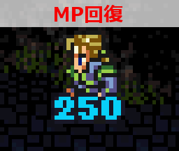 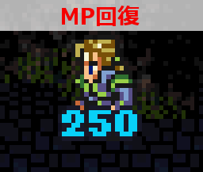
|
●Registering Monster Formations to the Veldt
- Original game:
- The monster's IDs are less than FF.
- Monster formations are 1FF or less.
When a correct monster formation is met and defeated, that formation is registered to the Veldt. However, this has been deleted and monster formations can be registered now up to 1FF (=511 types).
|
●Desperation Attacks
- I've implemented Desperation Attacks for Gau and Umaro who originally didn't have them.
- I've changed the method of activating these attacks from the original. Due to making it easier to proc, I've lowered the effect and performance.
- The activation chance has increased from 1/16 to 1/8.
- You may now use these abilities as many times as you'd like in a battle.
- I've deleted the specification to count to 768 during a battle before one of these attacks may be used.
- This has also been changed so that the "Offering/Master Scroll" effect will not affect the damage.
|
●Damage/Recovery Limit Increase
- In the original game the damage cap was 9999. This has now been changed to 32000.
- With the above change the display on the graphics has been increased from 4 to 5 digits.
- Because it's become 5 digits, the font looks weird, so I've changed it to a new font to hide this.
- Thanks to giangurgolo's "Overkill 32000" patch for this.
|
|
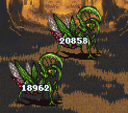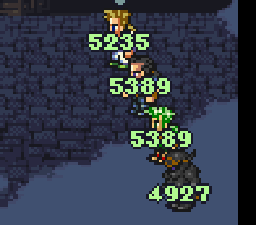
|
●Magic Casting Motions
- The casting animation for White and Summoning Magic has been changed.
- I've added a new animation and sound effect for Time Magic.
|
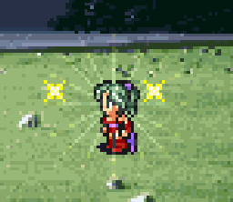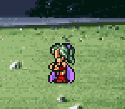
|
●Information Display of Status Ailments of Allies
- I've added the ability to see status ailments that can't be seen visually/normally: Reraise, Defend, Runic (Readying), Tachi: Sky (Counterattack), Charm, Love Token, and Cloudy Heaven, can be displayed via icons by pressing the Select button during battle.
- Mr. 288 on the forum's 「Additional Status Display Patch C」 process was used for this.
- Reraise … Feather
- Defend … Shield
- Runic (Readying) … Knight Sword
- Tachi: Sky … Katana
- Charm … Heart
- Love Token … Broken Heart
- Cloudy Heaven … Skull
|
|
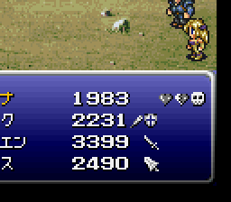
|
●Information Display on the Status Screen
- I've changed the status screen to display various information by pressing Left and Right on the D-Pad.
- Mr. 288's 「Status Menu Changes」 process was used for this.
- Menu Descriptions
- Main Page … Original status screen.
- Attributes … Attack/Defense attribute display （Absorb, Null, 50%, Weakness).
- Condition … Display of status ailment resistances, permanent effects, and initial changes.
Gray: No resistance. White: Resist. Yellow: Permanent effect. !: Initial change.
- Abilities … Shows current ability changes and boosts.
|
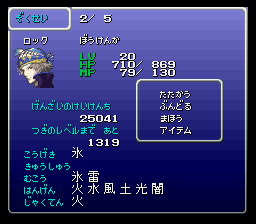
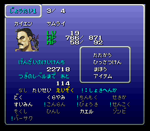
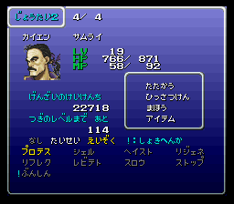
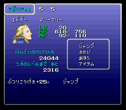
|
●Character Overview
- I've changed the appearances of characters to better suit their official artwork.
- The starting stats and equipment of each character has been changed.
- Each character's equippable items has been changed.
- When in Magitek Armor the "Magitek" (まどう) command is now 6 options for each character.
|
●Dressing Room
- During the World of Ruin, complete a new event to unlock the Dressing Room in the Falcon.
- The newly added Dressing Room allows you change the appearance of every playable permanent character.
- The field, map, and battle screens are changed as well. However, there is no change to save, shop, or party creation screens.
- By clearing events and Achievements, you'll unlock up to 4 new costumes total for each character to change into.
|
●Terra
- Magic learned by her at various levels has been changed.
- "Trance" has been changed from 2 times damage increase to 1.5.
- "Trance" has also had its damage blocking changed from 1/2 to 1/3.
- "Trance" will not increase the damage done by non-elemental damage.
- By using the new accessory "Zeidrich", Terra can change "Trance" to "Shock".
- "Trance" now has a different casting animation for Magic.
|
|
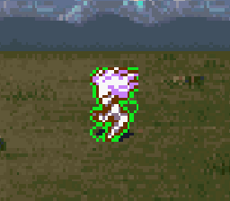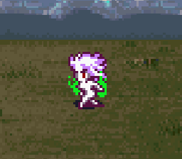
|
|
|
●Locke
- I've added the dagger "Orichalcum" for Locke which has its damage increased based on "Steal" total success.
- Orichalcum will have its max battle power increase to 255 once Locke has reach 510+ "Steal" successes.
- Orichalcum's current power can be checked on the weapon menu via checking it in the Item List.
※The Equipment Menu itself can not show it accurately.
|
|
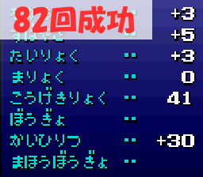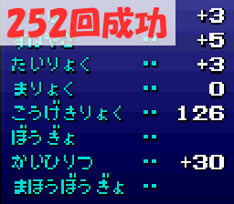
|
|
|
●Cyan
- The speed of the bar filling for "Iaido" has been increased.
- The names and effects of some "Iaido" have been changed.
- The performance of some "Iaido" and their accuracy has also been changed:
- Tachi: Fang … Accuracy has been changed to 130.
- Tachi: Tiger … Changed from percent damage to Max HP-Current HP=damage.
The accuracy has been changed to 100.
- Tachi: Dragon … The effect value was lowereed from 49 to 28.
- Tachi: Snow … Changed from "Moon". Deals ice/wind-elemental damage to a single target.
- Tachi: Moon … Changed from "Fierce". Does the same as "Moon" did in the original game.
- Tachi: Flower … Changed from "Cleave". Does the same as "Fierce" did in the original game.
The effect value has been lowered from 70 to 42.
- I've changed his animation at the start of battle.
- For more information on Cyan please check the link here: →Character List - Cyan
- For more information on "Iaido" please check the link here: →Iaido List
|
●Shadow
- Changed Shadow leaving the party randomly after a battle. He will no longer leave until the story requires him to.
- Shadow now immediately shows up at the end of the Floating Continent; there is no need to wait for him.
※This is because the event with Shadow was added to the World of Ruin, so he can no longer be killed. Sorry.
- The chance of Interceptor parrying and attacking was lowered from 50% to 33%.
- Interceptor's attacks have been changed from the 2 random ones to a new fixed one only.
- Added the ability "Dual Wield" (Genji Glove) to all Ninjato.
- Changed the performance of Throw:
- Flame Scroll … Lowered the effect value from 100 to 80.
一Changed the additional effect of Blind to land with high accuracy.
- Water Scroll … Lowered the effect value from 100 to 80.
一Changed the additional effect of Silence to land with high accuracy.
- Thunder Scroll … Lowered the effect value from 100 to 80.
一Changed the additional effect of Slow to land with high accuracy.
- For more information on Shadow please check the link here: →Character List - Shadow
- For more information on "Throw" please check the link here: →Throw List
|
●Edgar
- I've changed the performance and accuracy of many "Tools":
- Auto Crossbow … Accuracy has been changed to 100.
The effect value was lowered from 125 to 65.
- Noise Blaster … Accuracy has been changed to 120.
- Flash … Accuracy has been changed to 128.
The effect value was increased from 42 to 45.
The chance of Blind being set is now very high.
- Drill … Accuracy has been changed to 120.
The effect value was lowered from 191 to 95.
- Chainsaw … Accuracy has been lowered from 252 to 225.
- Air Anchor … Accuracy has been changed to 140.
The effect value has been lowered from 191 to 172.
When used on enemies who resist, it will instead deal damage only.
Inflicts "Heat".
Can now be selected for single or multiple targets.
- Debilitator … Deleted.
- Particle Bomb … New ability.
- For more information on Edgar please check the link here: →Character List - Edgar
- For more information on "Tools" please check the link here: →Tools List
|
●Sabin
- I've adjusted the performance and accuracy of most "Blitz" moves.
- Pummel … Accuracy has been changed to 130.
The effect value has been lowered from 110 to 98.
- Suplex … Accuracy has been changed to 80.
The effect value has been increased from 180 to 182.
- Phoenix Dance … The effect value has been lowered from 42 to 40.
- Chakra … Changed to now heal Poison. (Blind and Silence removed).
- Vacuum Wave … The effect value has been lowered from 78 to 75.
- Spiral Soul … Deleted.
- Tiger Rush … New ability.
- Phantom Rush … Accuracy has been changed to 150.
The effect value has been increased from 128 to 250.
It's been changed from a magic attack to now a physical attack.
- For more information on Sabin please check the link here: →Character List - Sabin
- For more information on "Blitz" please check the link here: →Blitz List
|
●Celes
- The Magic she learns at various levels has been changed.
- By equipping the accessory "Maiden's Prayer", "Runic" changes to "Pray".
- Runic's speed has been changed.
|
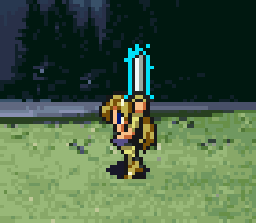
|
●Strago
- Changed Strago's "Learned Techniques" to "Blue Magic" (was called Learned Techniques, now it's Blue Magic in Japanese. You know it as "Lore" -Kain).
- The performance of some "Blue Magic" has been changed.
- I've deleted and added new "Blue Magic":
- Deleted spells:
- Stone Throw
- Transfusion
- Tsunami
- New spells:
- Mind Blast
- Magic Hammer
- Ancient Prayer
- For more information on Strago please check the link here: →Character List - Strago
- For more information on "Blue Magic" please check the link here: →Blue Magic List
|
●Relm
- Relm now learns magic naturally. The spells she learns at various levels has been added/changed.
- "Sketch" now uses Relm's stats rather than the enemy's.
Thanks to SPARX for this.
- "Sketch" now has a 75% chance to use the enemy's ability and a 25% chance to use the new ability "Wishing Star".
- I've deleted the accessory "Fake Moustache" and the ability "Control".
- "Sketch" can now be used even without a brush.
Brushes enhance the success rate of "Sketch".
- By equipping the new accessory "Embroided Tippet", "Sketch" is changed to "Spirit".
- For more information on Relm please check the link here: →Character List - Relm
|
●Setzer
- I've changed some performances of "Slots":
- Seven Flush … Changed the effect value from 84 to 42.
The damage hasn't been reduced.
- Dive Bomb … Changed the effect value from 130 to 65.
The damage hasn't been reduced.
- Mysidia Bunny … Changed the effect value from 10 to 14.
The formula has been changed to Level x Effect Value.
- Dart and Card weapons now give a bonus against flying enemies.
- For more information on Setzer please check the link here: →Character List - Setzer
- For more information on "Slots" please check the link here: →Slots List
|
●Mog
- "Dance" has been changed to now always succeed and no longer lock Mog. He'll now dance once then be able to pick another action on the next turn. This is now similar to how "Gaia" is in FF5.
Thanks to snow's patch for this.
- I've adjusted many different aspects of "Dance".
※Because there's so many changes please refer to "technique.html" for a full explanation.
- You can now get "Water's Harmony" during the World of Ruin if you've missed it.
- I've changed Mog's job title from "Moogle" to "Moogle Knight".
- By equipping the new accessory "Pheasant Netsuke" you can change "Dance" to "Animal".
- For more information on Mog please check the link here: →Character List - Mog
- For more information on "Dance" please check the link here: →Dance List
|
●Gau
- I've changed his command list. "Leap" has been removed and Gau now knows "Fight".
- How Gau learns "Rage" abilities has been changed. Simply have him in the party now fighting battles anywhere will grant him the "Rage" if he can learn it.
※You can now learn various "Rage" abilities in other places than the original game.
※If you're playing on a save file prior to Version 1.49 his new command will be "Jump" instead.
To fix this yourself without restarting you'll need to use a save data editing program or edit code yourself. Change "Rage" to the following: 7E17AE value 11→10.
- The "Rage" list is now sorted in alphabetical order (Japanese, but also English too! -Kain).
- When in the Menu you can now check the "Rage" list on Gau and view the special ability of each "Rage" shown as an example below:
|
|
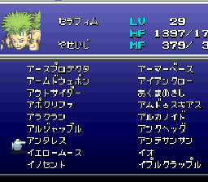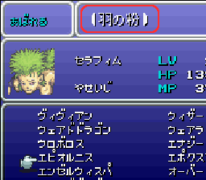
|
- Gau can now equip specific weapons.
- Due to this change his starting stats have been reduced a bit.
- Gau now has a Desperation Attack.
- For more information on Gau please check the link here: →Character List - Gau
- For more information on "Rage" please check the link here: →Rage List
|
●Gogo
- Gogo can now equip Eidolons to summon in battle.
- He can now learn Magic via Eidolons like the other party members.
- For more information on Gogo please check the link here: →Character List - Gogo
|
●Umaro
- I've changed it to where Umaro can now be controlled like other characters.
- Like Gogo, you can equip Eidolons to summon now.
- He can now learn Magic via Eidolons like the other party members.
- I've added the new command "Snowstorm".
In the original game, equipping the accessory "Blizzard Orb" would grant Umaro this technique to be used randomly. Now you may select it at anytime.
- By equipping the accessory "Berserker Ring" when using "Fight", "Throw Ally" has a high chance of activating.
- By equipping the accessory "Power Belt" when using "Fight", "Rampage" has a high chance of activating.
- Umaro now has a Desperation Attack.
- For more information on Umaro please check the link here: →Character List - Umaro
|
●Steal
- The formula for Steal, the chance of success, and rare steals have all been increased/changed from the original game:
- Success Chance … Original - （Level＋50－Target's Level）÷99
T-Edition - （Level＋70－Target's Level）÷99
- Rare Steal … Original - 1/8
T-Edition - 1/4
|
●Gil Toss
- I've changed the formula from the original game to now consume more Gil and deal more damage (enemies still use the original game's formula):
- Gil Consumption … Original - Level ×30
T-Edition - Level ×180
- Damage … Original - Gil consumed=2
T-Edition - Gil consumed=1/2
- Example of when used at Level 50:
Original - 1500 Gil consumed/3000 damage÷# of targets.
T-Edition - 9000 Gil consumed/4500 damage to all.
|
●2 Hands (Gauntlet)
- When using both hands to hold a weapon you'll deal double damage.
- To balance this a bit, evasion has been lowered when using this feature.
|
●Dual Wield (Genji Glove)
- Damage has been lowered to 0.75 per hand attack.
|
●Barrage (Master's Scroll Effect)
- The accuracy has been changed to normal accuracy.
- With this change additional effect procs like instant death or Desperation Attacks can't be dealt.
|
●Physical/Magical Attack Power Up
- Equipment with these effects have been changed so that if you equip multiples or other similar gear, they won't stack. "Earrings", "Gigas Glove", "Brave Ring", etc.
- "Magic Attack Power Up" has been changed to also affect recovery magic now.
|
●Extra Damage to Flying Monsters
- In the original game the formula was a chance to deal 1.5 times damage at a 50% rate, as well as a chance to do 3 times damage at also a 50% rate. This is now a flat 1.5 times damage increase guaranteed.
|
●Item Classification
- In addition to major item changes, new items have also been added.
|
●Ultima Weapon
- I've changed the level-dependent part of the attack power to now be based on Stamina. The higher the level, Stamina, and Strength, as well as your current HP%, the better the damage.
- When the weapon's damage hits a certain point the graphic changes:
- Dagger： 0～2000
- Sword： 2001～5000
- Great Sword： 5001～9999
|
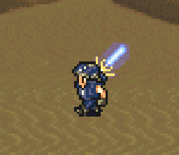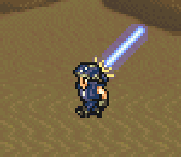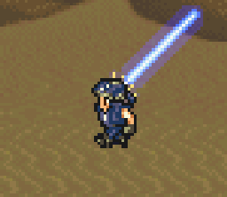
●Valiant Knife
- The physical defense-ignoring effect has been removed.
- On the weapon menu for the attack value it's now listed as ???.
|
●Dancing Dagger
- This weapon has a 50% chance to deal a normal attack and a 50% chance to do one of Mog's "Dance" abilities.
- "Animal" will not activate through this, however.
|
●Dice/Fixed Dice
- I've changed the calculation formula for "Fixed Dice". It's now the same as "Dice".
- Before： Product of dice×２×user's level.
- After： Product of dice×２×user's level×3/4.
- Versus piercing-resist mobs the "product×2" is changed to "product×1.06".
- "Fixed Dice" has had its accuracy changed to 100. It's now the same as "Dice".
- I've changed it so the spell "Berserk" has no effect on "Dice" or "Fixed Dice".
|
●Palette Changes
- I've created a new palette for existing monsters using the existing graphics:
- Example 1: Imperial Soldier, Soldier, and Commander.
- Example 2: Crawler and Figaro Lizard.
|
●Monster Changes
- I've added and deleted some monsters.
|
●Original Event Changes
- The contents of several events have been changed:
- Defending Narshe Battle … If Cyan is in the party when confronting Kefka a new event plays.
- Night in Albrook … A new event with Celes before leaving for Thamasa.
- Nursing Cid … The amount of fish necessary to heal Cid has been reduced.
- His Name is Gerad … Sabin will have new dialogue when you meet "Gerad".
- The Frozen Eidolon … There'll be no battle if you don't have Terra for Valigarmanda.
- Gau's Make-over … Talk to Gau's Father after his event to unlock all Veldt Formations.
- Cyan's Dream … A new solo battle for Cyan has been added. Losing won't Game Over.
|
●Side Quests
- New events have been added, mostly during the World of Ruin.
- For more information on "side quests" please check the link here: →Side Quests List
|
|